海军支援科技
原页面：Naval support technology
海军支援科研树包含所有并非舰体直接衍生型号的科技。大体上，这些科技包括新的或改进的海军武器，但也包括用于改进海军登陆中所使用运兵船的技术，以及少数用于降低来袭暴击效果和清扫敌方水雷的技术。
随着《诸神黄昏》引入特殊项目以及随之而来的补丁 1.15，所有海军支援科技现在在被研究时也会产生海军工程突破进度。
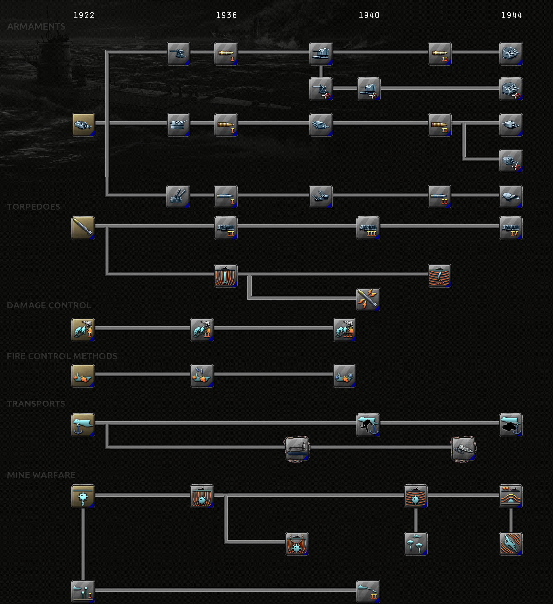
海军支援科研树
军备
舰炮
| 科技 | 年份 | 基础时间 | 前置条件 | 效果 | ||||||||||||||||||||||||||||||||||||||||||||||||||
|---|---|---|---|---|---|---|---|---|---|---|---|---|---|---|---|---|---|---|---|---|---|---|---|---|---|---|---|---|---|---|---|---|---|---|---|---|---|---|---|---|---|---|---|---|---|---|---|---|---|---|---|---|---|---|
海军火炮 舰炮瞄准与俯仰机构的基础设计。 |
1922 | 110 天 | – |
| ||||||||||||||||||||||||||||||||||||||||||||||||||
基础轻型火炮 用于较小舰船的小口径火炮敞开式动力炮架。安装此模块可提高轻型火炮攻击，有助于打击敌方屏卫舰。 |
1936 | 110 天 | 海军火炮 |
| ||||||||||||||||||||||||||||||||||||||||||||||||||
基础中口径炮组 用于巡洋舰的带动力炮塔，装有两到三门中口径火炮。安装轻型中型火炮组模块可提高轻型火炮攻击，有助于打击敌方屏卫舰。安装中型火炮组模块可提高重型火炮攻击，有助于打击敌方主力舰。 |
1936 | 110 天 | 海军火炮 |
| ||||||||||||||||||||||||||||||||||||||||||||||||||
基础重口径炮组 巨大的炮塔，在厚重装甲下容纳巨型火炮。安装重型火炮组模块可提高舰船的重型火炮攻击，提升对抗敌方主力舰的表现。 |
1936 | 110 天 | 海军火炮 |
| ||||||||||||||||||||||||||||||||||||||||||||||||||
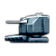 改进型轻口径炮组 小口径火炮的封闭式动力炮架可为炮组人员提供一定的防风防雨和防弹片保护。安装此模块可提高轻型火炮攻击，有助于打击敌方屏卫舰。 |
1939 | 110 天 | 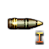 小口径半穿甲弹 |
| ||||||||||||||||||||||||||||||||||||||||||||||||||
改进型中口径炮组 改进的炮塔布局可加快装填速度，更好的装甲则提升生存能力。安装轻型中型火炮组模块可提高轻型火炮攻击，有助于打击敌方屏卫舰。安装中型火炮组模块可提高重型火炮攻击，有助于打击敌方主力舰。 |
1939 | 110 天 | 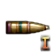 被帽穿甲中口径弹 |
| ||||||||||||||||||||||||||||||||||||||||||||||||||
改进型重口径炮组 动力推弹机可提高重型火炮的装填速度，自动防焰门则提升安全性。安装重型火炮组模块可提高舰船的重型火炮攻击，提升对抗敌方主力舰的表现。 |
1939 | 110 天 | 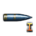 被帽穿甲弹 |
| ||||||||||||||||||||||||||||||||||||||||||||||||||
先进轻型炮组 先进的双联装炮架能在装甲防护下发挥出显著更强的火力。安装此模块可提高轻型火炮攻击，有助于打击敌方屏卫舰。 |
1944 | 110 天 | 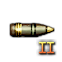 小口径穿甲弹 |
| ||||||||||||||||||||||||||||||||||||||||||||||||||
先进中型炮组 通过整合动力装填与远程动力控制，现代巡洋舰能够达到此前被认为不可能实现的射速与精度。安装轻型中型火炮组模块可提高轻型火炮攻击，有助于打击敌方屏卫舰。安装中型火炮组模块可提高重型火炮攻击，有助于打击敌方主力舰。 |
1944 | 110 天 | 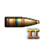 中口径半穿甲弹 |
| ||||||||||||||||||||||||||||||||||||||||||||||||||
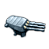 先进重型炮组 改进的制退机构与延迟线圈可减少炮弹在飞行中的相互干扰，并大幅提高精度。安装重型火炮组模块可提高舰船的重型火炮攻击，提升对抗敌方主力舰的表现。 |
1944 | 110 天 | 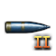 超重型穿甲弹 |
| ||||||||||||||||||||||||||||||||||||||||||||||||||
弹药
| 科技 | 年份 | 基础时间 | 前置条件 | 效果 | ||||||||||||||
|---|---|---|---|---|---|---|---|---|---|---|---|---|---|---|---|---|---|---|
小口径半穿甲弹 这种炮弹在穿甲性能与爆炸威力之间取得折中，在击穿轻型舰船薄弱装甲后能造成显著更大的伤害。 |
1936 | 55 天 | 基础轻型火炮 |
| ||||||||||||||
小口径穿甲弹 为小口径火炮配备真正的穿甲弹，使驱逐舰及其他轻型舰船面对有装甲的对手时也有了一战之力。 |
1942 | 55 天 | 改进型轻口径炮组 |
| ||||||||||||||
被帽穿甲中口径弹 加装风帽可使炮弹具有更好的气动外形，同时仍保持其穿甲性能。 |
1936 | 55 天 | 基础中口径炮组 |
| ||||||||||||||
中口径半穿甲弹 这种炮弹在穿甲性能与爆炸威力之间取得折中，在击穿轻型舰船薄弱装甲后能造成显著更大的伤害。 |
1942 | 55 天 | 改进型中口径炮组 |
| ||||||||||||||
被帽穿甲弹 加装风帽可使炮弹具有更好的气动外形，同时仍保持其穿甲性能。 |
1936 | 55 天 | 基础重口径炮组 |
| ||||||||||||||
超重型穿甲弹 这些巨型炮弹重达一吨以上，以空前的威力命中目标，即使对最厚重的装甲也构成严重威胁。 |
1942 | 55 天 | 改进型重口径炮组 |
| ||||||||||||||
双用途炮组
| 科技 | 年份 | 基础时间 | 前置条件 | 效果 | ||||||||||||||||||||||||||||||||||||||||||||
|---|---|---|---|---|---|---|---|---|---|---|---|---|---|---|---|---|---|---|---|---|---|---|---|---|---|---|---|---|---|---|---|---|---|---|---|---|---|---|---|---|---|---|---|---|---|---|---|---|
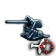 基础双用途炮组 将反舰炮与防空炮整合到同一座炮架上，可提供更大的灵活性并减轻重量。安装此模块可提高轻型火炮攻击，有助于打击敌方屏卫舰。这些模块还会提高防空攻击。安装副炮组模块可为巡洋舰、航空母舰或重型舰船提供少量轻型火炮攻击，并使其能够攻击第二个目标。 |
1939 | 110 天 | 改进型轻口径炮组 |
| ||||||||||||||||||||||||||||||||||||||||||||
改进型双用途炮组 动力驱动的全封闭双联装炮架在减轻重量的同时，大幅提升火力与防护。安装此模块可提高轻型火炮攻击，有助于打击敌方屏卫舰。这些模块还会提高防空攻击。安装副炮组模块可为巡洋舰、航空母舰或重型舰船提供少量轻型火炮攻击，并使其能够攻击第二个目标。 |
1939 | 110 天 | 基础双用途炮组 |
| ||||||||||||||||||||||||||||||||||||||||||||
先进两用炮组 自动化速射封闭式炮架大幅提升火力。安装此模块可提高轻型火炮攻击，有助于打击敌方屏卫舰。这些模块还会提高防空攻击。安装副炮组模块可为巡洋舰、航空母舰或重型舰船提供少量轻型火炮攻击，并使其能够攻击第二个目标。 |
1944 | 110 天 | 改进型双用途炮组 |
| ||||||||||||||||||||||||||||||||||||||||||||
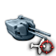 先进中型两用炮组 自动装填的速射中型封闭式炮组大幅提升火力。安装轻型中型火炮组可提高轻型火炮攻击，有助于打击敌方屏卫舰。此模块还会提高防空攻击。 |
1944 | 165 天 | 中口径半穿甲弹 |
| ||||||||||||||||||||||||||||||||||||||||||||
鱼雷
舰载鱼雷发射器
| 科技 | 年份 | 基础时间 | 前置条件 | 效果 | ||||||||||||
|---|---|---|---|---|---|---|---|---|---|---|---|---|---|---|---|---|
基础鱼雷 一种自带动力的武器，装有爆炸战斗部，沿预定航向航行，直至命中水线以下的目标。在轻型舰船或巡洋舰上安装此模块，可使其对敌方主力舰造成重大伤害。 |
1922 | 220 天 | – |
| ||||||||||||
改进型舰载鱼雷发射器 更强的电动机允许在同一座炮架上安装更多发射管，并能更快地转向目标。在轻型舰船或巡洋舰上安装此模块，可使其对敌方主力舰造成重大伤害。 |
1936 | 165 天 | 基础鱼雷 |
| ||||||||||||
先进舰载鱼雷发射器 更大直径的发射管可容纳战斗部更重的更大鱼雷。在轻型舰船或巡洋舰上安装此模块，可使其对敌方主力舰造成重大伤害。 |
1940 | 165 天 | 改进型舰载鱼雷发射器 |
| ||||||||||||
现代舰用鱼雷发射器 强力的压缩空气装药使更重的鱼雷能以更高速度发射。在轻型舰船或巡洋舰上安装此模块，可使其对敌方主力舰造成重大伤害。 |
1944 | 165 天 | 先进舰载鱼雷发射器 |
| ||||||||||||
鱼雷战
| 科技 | 年份 | 基础时间 | 可选加成 | 前置条件 | 效果 | |||||||||
|---|---|---|---|---|---|---|---|---|---|---|---|---|---|---|
磁性感发引信 新型引信能在鱼雷从目标下方通过时侦测地球磁场的变化。在舰船正下方爆炸会造成大得多的伤害，常常直接折断目标龙骨，使其瞬间沉没。 |
1936 | 275 天 | 50 用于 |
基础鱼雷 |
| |||||||||
自导鱼雷 装上声学探测器后，鱼雷能够自动追踪其前方最大的噪声源——通常就是目标。 |
1942 | 275 天 | 50 用于 |
磁性感发引信 |
| |||||||||
电动鱼雷 电动鱼雷不会留下容易被发现的气泡尾迹，在命中之前几乎无法被察觉。这也意味着没有尾迹会暴露发射它的潜艇。 |
1940 | 275 天 | 50 用于 |
磁性感发引信 |
| |||||||||
损害管制
| 科技 | 年份 | 基础时间 | 可选加成 | 前置条件 | 效果 | ||||||
|---|---|---|---|---|---|---|---|---|---|---|---|
消防演习 舰上每一名船员，从舰长到普通水兵，都必须能够协助控制和扑灭舰上火灾。 |
1922 | 275 天 | 50 用于 |
– |
| ||||||
独立消防总管 通过将舰上各主水管线路分开布置，一次命中就使舰船完全丧失灭火能力的概率大大降低。 |
1922 | 275 天 | 50 用于 |
消防演习 |
| ||||||
柴油动力应急水泵 由于重型水泵通常依赖主机提供动力，轮机舱挨上哪怕一次相当轻的命中，就可能使舰船无法保持浮力。 |
1922 | 275 天 | 50 用于 |
独立消防总管 |
| ||||||
火控方法
| 科技 | 年份 | 基础时间 | 可选加成 | 前置条件 | 效果 | ||||||||||||||||||||||
|---|---|---|---|---|---|---|---|---|---|---|---|---|---|---|---|---|---|---|---|---|---|---|---|---|---|---|---|
夹叉射击 要命中目标，第一步是夹叉目标——每次只用几门炮射击，直到弹着点落在目标两侧。 |
1922 | 275 天 | 50 用于 |
– |
| ||||||||||||||||||||||
梯次射击 不再越过目标射击、以致看不清落在敌舰后方的弹着点，而是故意将炮弹打在目标前方，通过测量弹着点与目标之间的距离来确定距离。 |
1922 | 275 天 | 50 用于 |
夹叉射击 |
| ||||||||||||||||||||||
炮弹染色剂 在发射时为炮弹加入少量染色剂，可使目标周围的弹着点带上颜色，让多艘舰船能够攻击同一目标而不会被彼此的弹着点弄混。 |
1922 | 275 天 | 50 用于 |
梯次射击 |
| ||||||||||||||||||||||
运输舰队
| 科技 | 年份 | 基础时间 | 可选加成 | 前置条件 | 效果 | ||||||||||||||
|---|---|---|---|---|---|---|---|---|---|---|---|---|---|---|---|---|---|---|---|
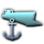 运输船 专为运送部队而设计的船只，不具备任何防御能力。 |
1922 | 165 天 | – | – |
| ||||||||||||||
登陆艇 专用登陆艇让在敌占区登陆这件事稍稍不那么令人头疼。 |
1940 | 220 天 | – | 运输船 |
| ||||||||||||||
高级登陆艇 先进的登陆艇意味着我们的士兵在登陆作战时能更快、更有效地登上滩头。 |
1944 | 220 天 | – | 登陆艇 |
| ||||||||||||||
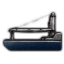 多产品补给舰 借助新生产的补给舰，我们可以确保燃料、弹药和补给品更顺畅地转运。 |
1938 | 220 天 | 75 用于 |
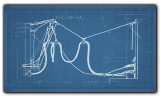 航行中补给运输船 |
| ||||||||||||||
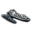 标准化张力式海上并靠补给法 标准化张力式海上并靠补给法（Standardized Tenshioned Replenishment Alongside Method，简称 STREAM）是确保我方远洋海军行动获得稳定补给的进一步演进。 |
1943 | 275 天 | 75 用于 |
多产品补给舰 |
| ||||||||||||||
水雷战
水雷
| 科技 | 年份 | 基础时间 | 前置条件 | 效果 | ||||||||||||||||||
|---|---|---|---|---|---|---|---|---|---|---|---|---|---|---|---|---|---|---|---|---|---|---|
触发水雷 一种锚定在海底的简易漂浮炸弹。水雷在与舰船接触时爆炸。 |
1922 | 220 天 | – |
| ||||||||||||||||||
磁性水雷 这种精密水雷在侦测到过往舰船引起的磁场变化时爆炸。 |
1936 | 220 天 | 触发水雷 |
| ||||||||||||||||||
消磁 通过安装强力电磁线圈，可大幅降低舰船的磁信号特征，使其远不容易受到磁性水雷的威胁。 |
1938 | 110 天 | 磁性水雷 |
| ||||||||||||||||||
声引信水雷 这种水雷在其传感器侦测到附近舰船的噪声时起爆。 |
1942 | 220 天 | 磁性水雷 |
| ||||||||||||||||||
压力水雷 这种高度先进的水雷能侦测到附近舰船移动所引起的水压微小变化。 |
1945 | 220 天 | 声引信水雷 |
| ||||||||||||||||||
空中布雷战
| 科技 | 年份 | 基础时间 | 前置条件 | 效果 | |||||||||||||||||||||||||||
|---|---|---|---|---|---|---|---|---|---|---|---|---|---|---|---|---|---|---|---|---|---|---|---|---|---|---|---|---|---|---|---|
空中布雷 为水雷装上小型降落伞后，即可安全地从飞机上空投，从而快速高效地布设雷场。 |
1942 | 110 天 | 声引信水雷 |
| |||||||||||||||||||||||||||
空中扫雷 飞机可加装特殊设备，从空中探测并安全引爆水雷。 |
1944 | 110 天 | 压力水雷 |
| |||||||||||||||||||||||||||
潜艇布雷
| 科技 | 年份 | 基础时间 | 前置条件 | 效果 | ||||||||
|---|---|---|---|---|---|---|---|---|---|---|---|---|
布雷潜艇 通过安装用于容纳和释放水雷的特殊设备，专门设计的潜艇可以在潜航状态下布雷，且有望不被发现。 |
1922 | 220 天 | 触发水雷 |
| ||||||||
鱼雷管布雷 重新设计水雷使其能装入鱼雷发射管，可让任何潜艇都变成布雷潜艇，代价是减少携带的鱼雷。 |
1940 | 220 天 | 布雷潜艇 |
| ||||||||
参考资料
战争
| 政治 | 意识形态 • 阵营 • 国策 • 理念 • 政府 • 傀儡国 • 流亡政府 • 外交 • 世界紧张度 • 内战 • 占领 • 力量均势 |
| 生产 | 贸易 • 生产 • 建造 • 装备 • 燃料 • 军工组织 • 国际市场 |
| 科研与科技 | 科研 • 步兵科技 • 支援连科技 • 装甲科技（也包括 未拥有绝不后退）• 火炮科技 • 陆军学说 • 特种部队学说 • 海军科技（也包括 未拥有全民持枪）• 海军支援科技 • 海军学说 • 空军科技（也包括 未拥有以血盟誓）• 空军学说 • Engineering科技 • Industry科技 • 特殊项目 • 科学家 |
| 军事与战争 | 战争 • 和平会议 • 陆军单位 • 陆战 • 师编制设计 • 坦克设计 • 陆军编制器 • 集团军 • 指挥官 • 作战计划 • 战斗战术 • 舰船 • 舰船设计（伦敦海军条约）• 海战 • 飞机设计 • 空战 • 经验 • 军官团 • 损耗与事故 • 后勤 • 人力 • 核弹 • 突袭 |
| 间谍活动 | 情报 • 情报机构 • 特工 • 任务 • 行动 |
| 地图 | 地图 • 省份 • 地形 • 天气 • 州 |
| 事件与决议 | 事件 • 决议 |